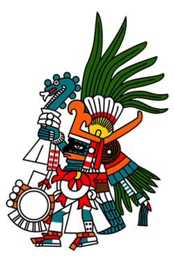

HUITZILOPOCHTLI
Huitzilopochtli o "Colibrí Zurdo" es el dios de la guerra, advocación solar y patrono de los mexicas. Bajo su tutela, este pueblo se convirtió en el más poderoso del ámbito mesoamericano durante el periodo Postclásico.
Era hijo de Coatlicue, hermano de Coyolxauhqui, la Luna, y de las estrellas, los Centzonhuitznahua, todos ellos dioses de inspiración mexica. Su sitio tan relevante en el Templo Mayor, da cuenta de la importancia que Huitzilopochtli representaba para los mexicas: la guerra y el tributo como parte del sustento económico.
En esta sala se exhiben diversos objetos relacionados con Huitzilopochtli. Destaca entre ellos la escultura conocida como el “Guerrero Águila” encontrada en La Casa de las Águilas, edificio religioso ubicado al norte del Templo Mayor. Los estudios del doctor Leonardo López Luján dan otra interpretación a estas figuras, llamándolos Hombre Águila, que representan al sol ascendente, o al Tlatoani que nace después de su elección como gobernante. Asimismo, la representación del dios de la muerte, Mictlantecuhtli, destaca entre las piezas exhibidas. Otras esculturas relacionadas directamente con esta deidad son los Portaestandartes, que representan a los Centzonhuitznahua, hermanos de Huitzilopochtli. Además, se puede apreciar una colosal cabeza de serpiente hecha en basalto, que representa a la serpiente de fuego, la Xiuhcóatl, misma que es el arma con que la deidad guerrera derrotó a su hermana.
Otros objetos relevantes de esta sala, y que fueron encontrados del lado correspondiente a Huitzilopochtli, son: la representación de Mayahuel, diosa del pulque; uno de los varios relieves del "Señor de la Tierra", Tlaltecuhtli, varias esculturas del dios del fuego, Xiuhtecuhtli-Huehuetéotl, e, indudablemente, el gran monolito de Coyolxauhqui que se asocia con el mito de nacimiento de Huitzilopochtli, diosa lunar que yace desmembrada y que fue hallada el 21 de febrero de 1978.